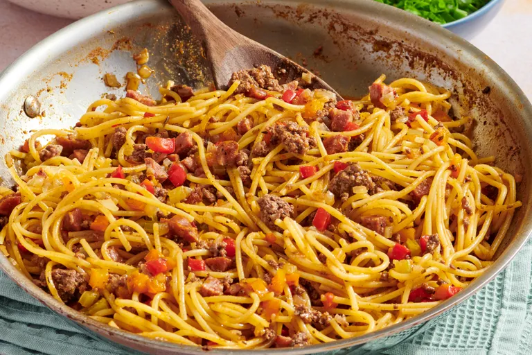

One-Pan Spaghetti

Description
This one-pan dirty spaghetti is a hearty, flavor-packed pasta dish made with ground beef,
andouille sausage, vegetables, and a mix of bold seasonings.
Because the spaghetti cooks directly in the same pan with the broth and other ingredients, it
absorbs extra flavor while also keeping cleanup simple.
Ingredients
- 2 tablespoons olive oil
- 8 ounces ground beef
- 1 medium yellow onion, diced
- 1 ½ cups diced bell pepper
- ½ cup diced celery
- 4 ounces andouille sausage, diced small
- ½ teaspoon onion powder
- ½ teaspoon garlic powder
- 1 teaspoon paprika
- 1 teaspoon ground cumin
- ¼ teaspoon dried oregano
- ¼ teaspoon dried thyme
- 1 ½ teaspoons kosher salt
- ¼ teaspoon cayenne pepper
- ½ teaspoon freshly ground black pepper
- 2 cups beef broth
- 8 ounces spaghetti
- 1 teaspoon Worcestershire sauce
- ½ cup sliced green onions, for garnish
Steps
-
Add oil to a deep skillet with a tight fitting lid and set over medium-high heat. Add ground
beef, and cook, stirring, for 3 or 4 minutes, breaking the meat up into small crumbles while
doing so.
-
Once ground beef is browned, add onion, bell peppers, celery, and andouille sausage, and
cook, stirring, for 2 more minutes. Season with onion powder, garlic powder, paprika, cumin,
oregano, thyme, cayenne, black pepper, and salt, and cook, stirring, for 1 to 2 minutes
more. Pour in broth and bring to a simmer.
-
Break spaghetti in half and add to the pan. Distribute spaghetti as evenly as possible and
cover the pan tightly. Cook on medium-high for 2 minutes. Uncover and give everything a
stir. Repeat this process of uncovering, stirring, and covering every 2 minutes or so, until
pasta is cooked to your desired doneness.
Return Home